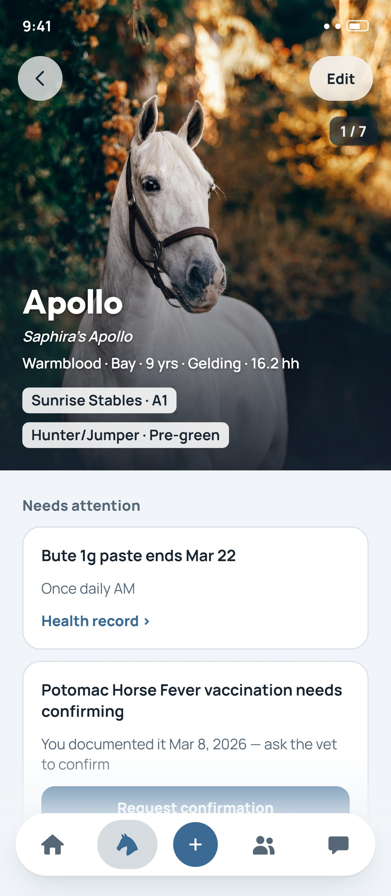
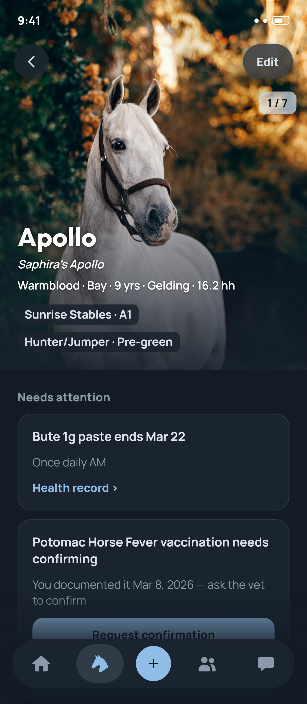
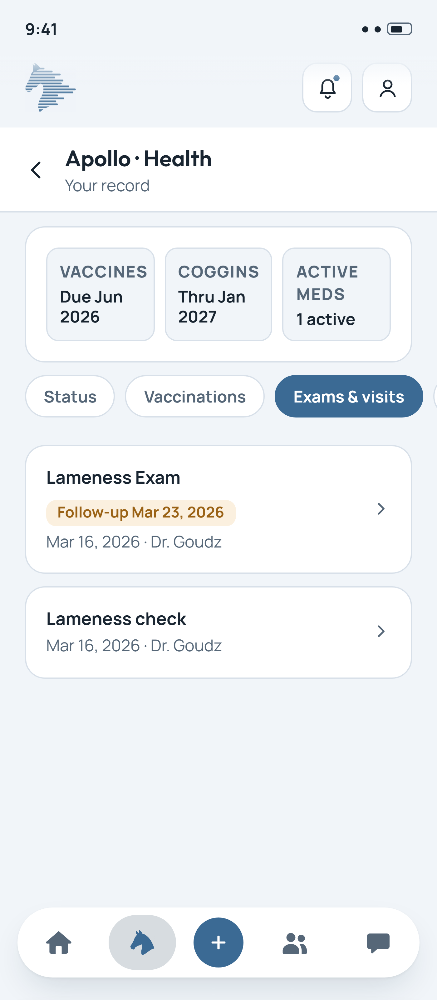
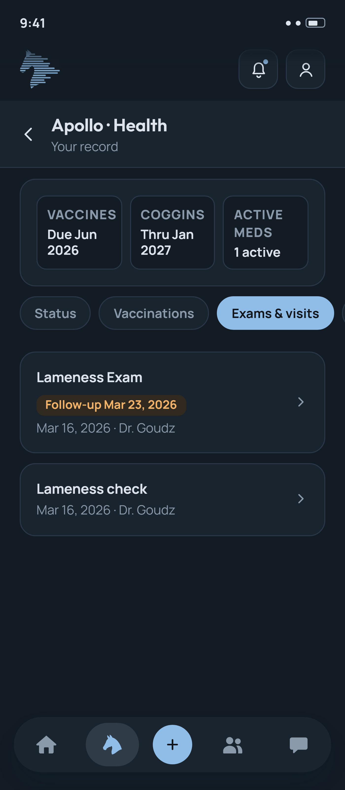
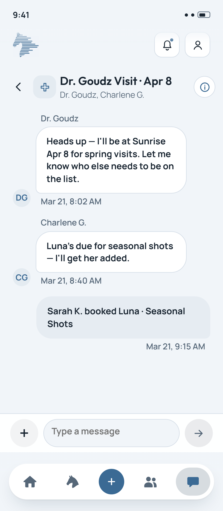
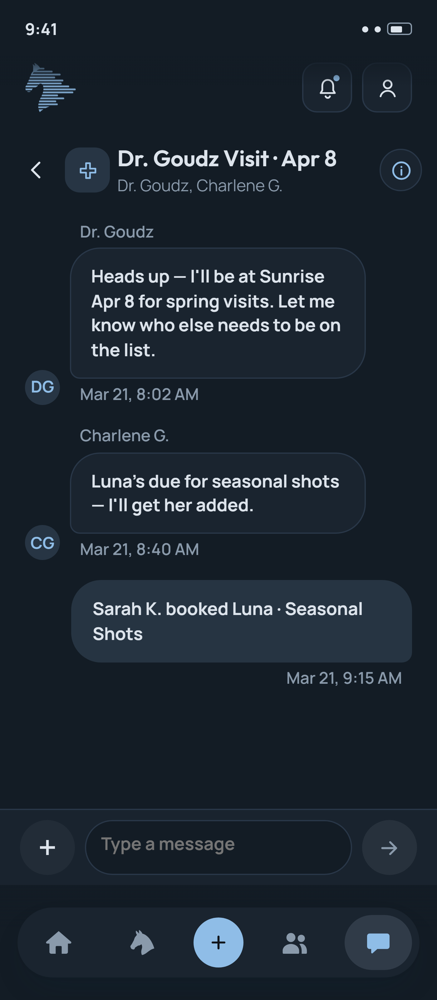

The equine ecosystem, completely connected.
Owners, barns, and the professionals who care for your horse — all working from the same record, in real time. No more hunting through texts, folders, and memory.
One horse. One record. Everyone who cares for them, in sync.
A horse's care doesn't happen in one place — it happens across a barn aisle, a vet visit, a training session, a text thread, a folder of paperwork nobody can find when they need it. NayNay brings all of it together into one living record, shared by everyone the horse actually depends on.
Your horse's home base.
Every horse gets one profile — health and wellness history, feeding and medication regimens, training and rehab schedules, and competition registration and results — connected to the people who help you care for them. No more piecing it together from memory, a folder, and a dozen different text threads.
Built for how a barn actually runs.
Managers and trainers get daily tools to log feed and medication intake, build and track training and rehabilitation programs, and keep every horse's care coordinated across staff and shifts. What used to live on a whiteboard or get lost between shift changes now stays with the horse.
Care documentation that travels with the horse.
Vets, trainers, and breeders are the core of this side of the ecosystem, and other professionals too. Document exams, vaccinations, lab results, and treatment plans once, and they're instantly visible to the owner and barn without a phone call or a fax. Manage your business — scheduling, booking, and payments — in the same place as your clinical work, no separate invoicing system or calendar app required.
Less searching. Less repeating yourself. Better care.
When a horse's information lives in one person's phone, a folder in a truck, and half a dozen text threads, something eventually gets missed — a dose, a document, a detail that mattered. NayNay closes those gaps by keeping the whole ecosystem looking at the same record.
Nothing gets lost between people
A vet documents an exam, a trainer logs a session, a barn manager notes a feeding change — and the owner sees it all without asking. Every handoff between the people around a horse happens in the record, not around it.
Every document, ready when it's needed
Immunization records, PPE results, lab work, entry paperwork — the moment you need to register for a show, sell a horse, or answer a vet's question, it's already there instead of being tracked down under deadline.
Health and performance, seen together
Feeding, training, medication, and rehab regimens sit next to competition and performance history — so patterns are visible, not just individual records in isolation.
Built around how care actually happens.
Every feature exists because something in this workflow used to live on paper, in a text thread, or in someone's memory.
Horse Profile
A complete, unified profile for every horse — pedigree, ownership, immunizations, insurance, lab results, vet visits, training and rehab schedules, feed and medication regimens, competition history, and more. No scattered folders, no memory-reliant logs.
Documentation
Log vitals, observations, vaccines, exams, and lab results — each in a guided flow built for how care actually happens. Snap a photo or video right from your phone to document an observation in the moment. Once submitted, it's instantly part of the horse's permanent record, visible to the owner and barn.
Scheduling & Payments
Professionals can schedule visits to a barn, and owners can book appointments with those professionals directly from NayNay — paid with a card on file. No separate booking app, no invoice emails, no phone tag.
Messaging
Messaging is the thread that holds everyone around a horse together. Conversations can start automatically right after documentation — an exam, a vitals check, a vaccine, an observation — so the right people are looped in without a separate update, and scheduling can happen right there in the thread.
Natural Language Logging
Tell NayNay what happened, in your own words — including the shorthand and terminology vets already use. Rattle off vitals during an exam and NayNay captures the detail correctly, without you stopping to fill out a form.
Seamless Event Registration
Share immunization records and rider documentation to register for shows and races directly from NayNay, with entry paperwork and event passes handled in the same place as everything else.
Competition Integration
Registration, entry documentation, and results connect automatically to each horse's health and training history — so you can see which horses are thriving, which are lagging, and adjust care or training accordingly.
Trial & Sales
Selling or trialing a horse? Share the documentation that matters — PPE results, imaging, training history, photos and videos — directly from the record, so the process stays organized without a marketplace listing.
AI-Powered Insights
Intelligent analysis flags potential health or performance risks based on event context and historical data, with actionable recommendations — not just a dashboard of numbers.
Multiplatform, Built Native
NayNay works on the web, iOS, and Android — with real native integrations, not a wrapped webpage. Use your camera to capture observations, get push notifications the moment something changes, and pick up right where you left off on any device.
A closer look at NayNay.
The same record, viewed from wherever you sit in the ecosystem — owner, barn, or professional.


Horse Profile


Health Record


Messaging
Free to start. Built to scale with you.
The same simple pricing whether you're an owner, a barn, or a professional — priced by how many horses you manage, not by role.
Free
Every feature, for 1 horse. The same free tier whether you're an owner, a barn, or a professional.
Premium
Every feature included at every level. More than 100 horses? Contact us for custom pricing.
Need more room for photos and videos? Add extra storage and higher-quality media anytime for +$10/mo.
Pricing is per seat — barn managers and professionals can add staff as additional seats.
No credit card required to get started.
Owners, trainers, breeders, and vets on NayNay.
"I finally have one place to keep all of my information related to my beloved horse, Hoof Hearted."
"NayNay makes it so easy for me to document exams, vaccinations, and tests and share the results with the horse's owners."
"I was able to click through a few prompts to seamlessly provide my patient's owner with the vaccination info they needed to register for their upcoming show!"
"NayNay made it so simple for me to find the perfect horse! I was able to review his records, observe him over video call, and arrange a time to meet in person. Wow!"
"I used to keep every horse's training plan in a different notebook. Now I log a session between rides and the owner sees it before I've even untacked. It's changed how I communicate with clients."
"Pedigree and bloodline records used to live in a spreadsheet I was terrified of losing. NayNay keeps generations of breeding history connected to every foal, and buyers trust it because they can see the whole line for themselves."
Questions from owners, barns, and professionals.
Answers to what people ask most before getting started. Still need help? Reach out and we'll get back to you.
For Owners
No. You can log care and updates in your own words — NayNay handles the rest. Most owners are comfortable within their first few uses.
Yes. You decide who's connected to your horse's profile — your barn, your vet, and any other professionals you work with.
Send an invite directly from NayNay. Once they accept, they're connected to your horse's profile and can start documenting care right away.
For Barns
Yes — barns can add horses, assign staff, and coordinate daily tasks like feeding, turnout, and medications across everyone working in the barn.
For most barns, yes. Daily tasks, training assignments, and care coordination happen in NayNay instead of a whiteboard, spreadsheet, or group text.
Yes. Staff, managers, and owners each see and manage what's relevant to their role.
For Vets, Trainers & Breeders
You can document exams, training sessions, and breeding records in a guided flow built for each — or describe what happened in your own words, including the shorthand you already use, and NayNay captures the detail.
Yes. Scheduling, booking, and payments are part of the platform, alongside your documentation — no separate system required.
Once you submit an exam, session, or record, it's instantly visible to the horse's owner and barn — no separate email or phone call needed.